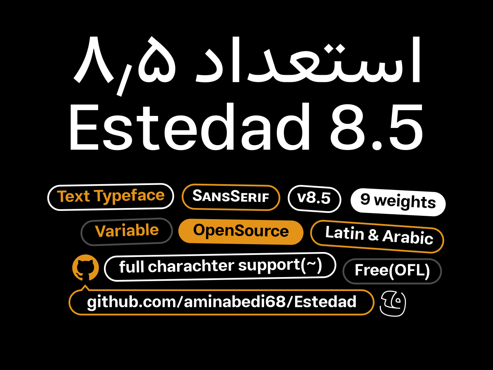
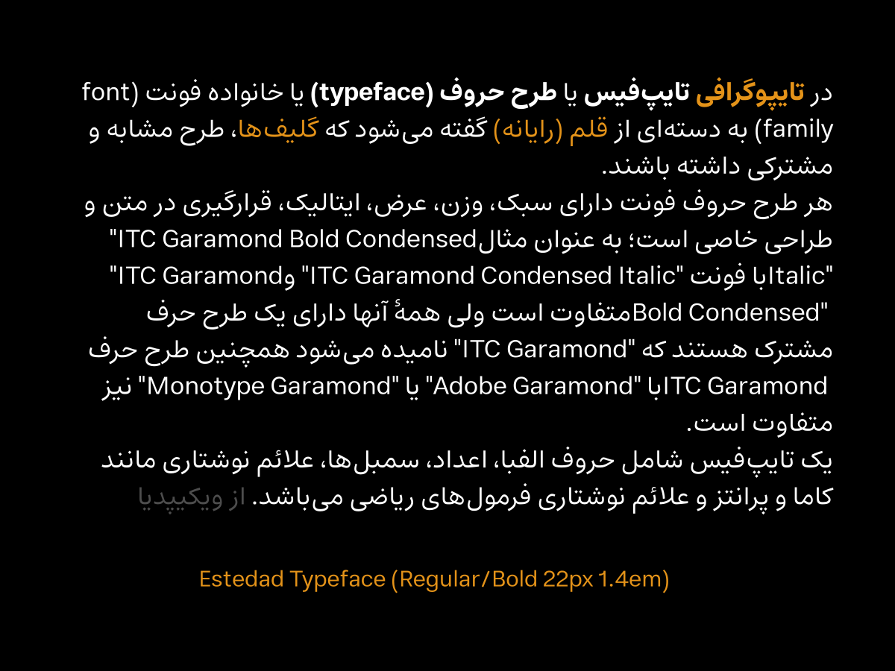
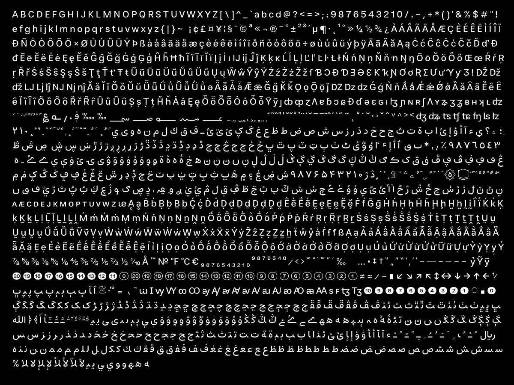

Estedad (/~este~dAd/, meaning “Talent” in Persian) is an Arabic–Latin sans-serif typeface family available in 9 standard weights, along with a variable font (wght axis).
Estedad supports a wide range of Arabic and Latin codepoints, covering most use cases for both writing systems.The design is simple, smooth, and compact, with low contrast and a relatively small optical size (slightly increased in bold and heavier weights). The typeface is optimized for screen and web-oriented environments.
To contribute, see github.com/aminabedi68/Estedad.


